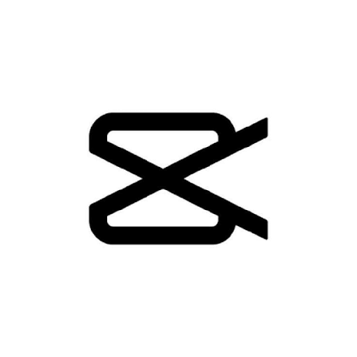

Produksi Video & Konten Kreator
Halo, saya Restian.
Content Creator & Mobile Video Editor.
Saya dapat membuat karya visual bernilai estetika tinggi dengan elemen yang cocok. Gabungan asik antara logika terstruktur mekatronika dan kreativitas tanpa batas, modal smartphone saja!


